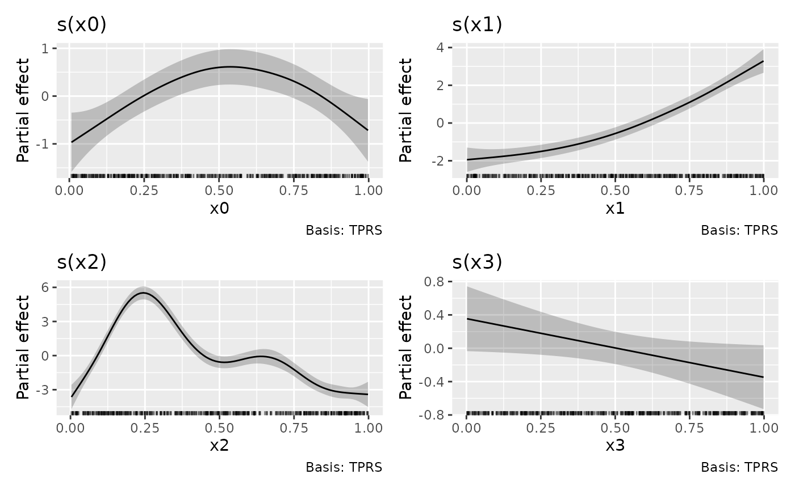

draw.gam.RdPlots estimated smooths from a fitted GAM model in a similar way to
mgcv::plot.gam() but instead of using base graphics, ggplot2::ggplot()
is used instead.
# S3 method for gam draw(object, parametric = NULL, select = NULL, scales = c("free", "fixed"), align = "hv", axis = "lrtb", n = 100, unconditional = FALSE, overall_uncertainty = TRUE, dist = 0.1, rug = TRUE, partial_match = FALSE, ...)
| object | a fitted GAM, the result of a call to |
|---|---|
| parametric | logical; plot parametric terms also? Default is |
| select | character, logical, or numeric; which smooths to plot. If
|
| scales | character; should all univariate smooths be plotted with the
same y-axis scale? The default, |
| align | characer; see argument |
| axis | characer; see argument |
| n | numeric; the number of points over the range of the covariate at which to evaluate the smooth. |
| unconditional | logical; should confidence intervals include the
uncertainty due to smoothness selection? If |
| overall_uncertainty | logical; should the uncertainty in the model constant term be included in the standard error of the evaluate values of the smooth? |
| dist | numeric; if greater than 0, this is used to determine when
a location is too far from data to be plotted when plotting 2-D smooths.
The data are scaled into the unit square before deciding what to exclude,
and |
| rug | logical; draw a rug plot at the botom of each plot? |
| partial_match | logical; should smooths be selected by partial matches
with |
| ... | arguments passed to |
The object returned is created by cowplot::plot_grid().
Internally, plots of each smooth are created using ggplot2::ggplot()
and composed into a single plot using cowplot::plot_grid(). As a result,
it is not possible to use + to add to the plots in the way one might
typically work with ggplot() plots.
suppressPackageStartupMessages(library("mgcv")) set.seed(2) dat <- gamSim(1, n = 400, dist = "normal", scale = 2)#> Gu & Wahba 4 term additive model